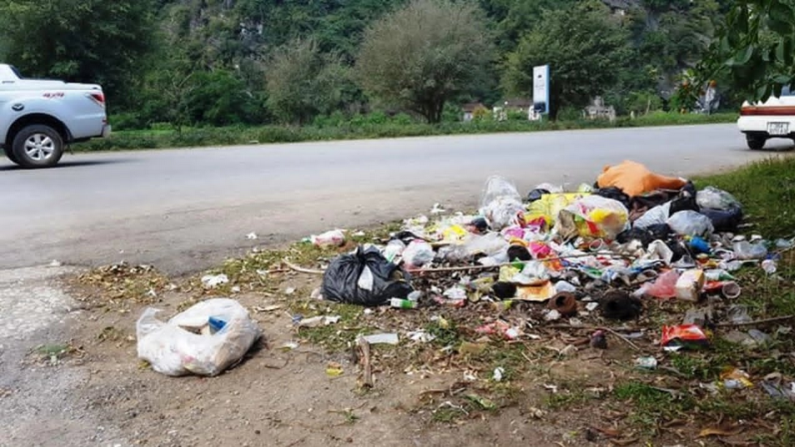
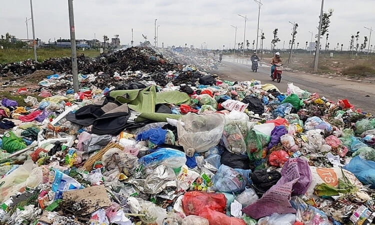
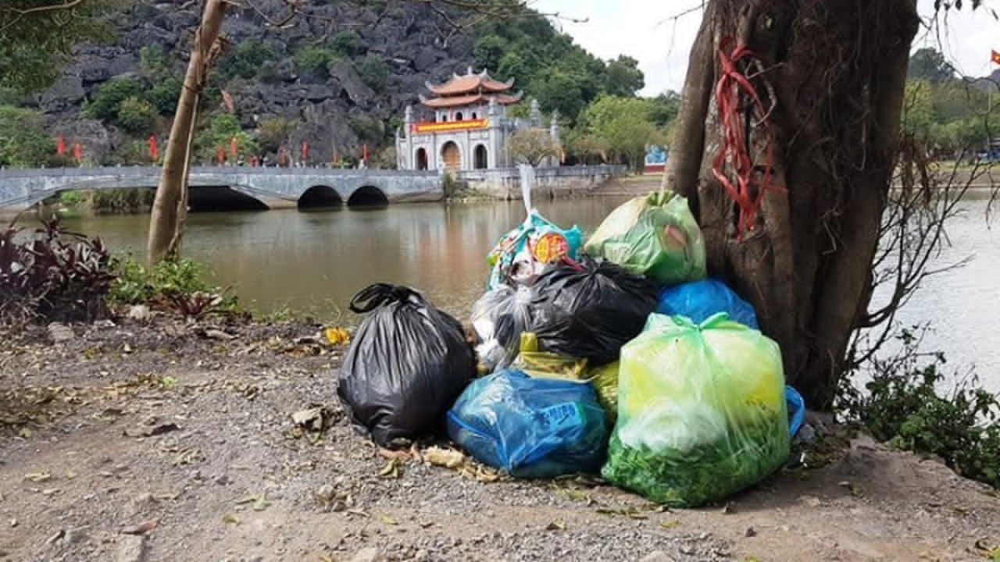

Hành trình “Vịnh Hạ Long trên cạn”
Ninh Bình – vùng đất cố đô linh thiêng, được thiên nhiên ưu ái ban tặng những dãy núi đá vôi trùng điệp, dòng sông xanh uốn lượn và những cánh đồng lúa bạt ngàn. Quần thể danh thắng Tràng An – Tam Cốc – Bích Động không chỉ là niềm tự hào của Việt Nam mà còn là Di sản Văn hóa và Thiên nhiên Thế giới được UNESCO vinh danh.
Nơi đây lưu giữ hồn cốt của kinh đô Hoa Lư xưa, chùa Bái Đính với kiến trúc Phật giáo đồ sộ, cùng Vườn quốc gia Cúc Phương – khu bảo tồn đa dạng sinh học hàng đầu Đông Nam Á. Sự giao thoa giữa văn hóa lịch sử và cảnh quan kỳ vĩ đã tạo nên một Ninh Bình đầy quyến rũ.
Tuy nhiên, trước sức ép du lịch gia tăng và biến đổi khí hậu, việc bảo vệ môi trường nơi đây đòi hỏi hành động khẩn trương. Giữ gìn dòng sông trong xanh, núi non bát ngát là trách nhiệm của mỗi du khách và thế hệ hôm nay.
Thực trạng áp lực môi trường

Lượng khách tham quan Tràng An, Tam Cốc ngày càng đông, đặc biệt vào mùa lễ hội. Rác thải nhựa như chai nước, túi nilon, ống hút bị vứt xuống lòng sông gây ô nhiễm nguồn nước và ảnh hưởng đến hệ sinh thái thủy sinh. Nhiều điểm du lịch chưa có hệ thống xử lý nước thải tập trung, khiến chất lượng nước sông Ngô Đồng suy giảm.
Hoạt động giao thông đường bộ và đường thủy gia tăng dẫn đến bụi mịn, khí thải, tiếng ồn. Tình trạng khai thác đá vôi trái phép tại một số mỏ ngoài vùng lõi vẫn tiềm ẩn nguy cơ phá vỡ cảnh quan. Nếu không có sự can thiệp mạnh mẽ, vẻ đẹp “cố đô” sẽ bị tổn hại khó phục hồi.
Nguyên nhân gốc rễ

Du lịch phát triển nóng, thiếu kiểm soát chặt chẽ về rác thải và nước thải. Ý thức một bộ phận du khách còn hạn chế, xả rác không đúng nơi quy định. Bên cạnh đó, việc sử dụng phân bón hóa học và thuốc bảo vệ thực vật trong nông nghiệp tại vùng đệm khiến nước mặt bị ô nhiễm dinh dưỡng, gây hiện tượng phú dưỡng.
Các cơ sở lưu trú, nhà hàng ven sông chưa đầu tư hệ thống xử lý nước thải đạt chuẩn. Công tác quản lý chất thải rắn tại các điểm tham quan còn bất cập, thiếu thùng rác phân loại. Người dân địa phương đôi khi vẫn đốt rác thải sinh hoạt lộ thiên, ảnh hưởng đến chất lượng không khí.
Hậu quả nếu không hành động

Ô nhiễm nước và rác thải nhựa sẽ giết chết các loài thủy sinh, làm mất đi hệ sinh thái đặc trưng của các vùng ngập nước Tràng An. Dòng sông không còn trong xanh, ảnh hưởng trực tiếp đến sinh kế của hàng nghìn người dân làm nghề chèo thuyền, dịch vụ du lịch.
Cảnh quan suy thoái sẽ khiến du khách quay lưng, gây thiệt hại hàng nghìn tỷ đồng cho ngành du lịch. Biến đổi khí hậu kết hợp với mất rừng làm gia tăng lũ quét, sạt lở núi đá vôi. Ninh Bình có thể đánh mất danh hiệu “di sản thiên nhiên thế giới” nếu không hành động kịp thời.
Giải pháp cho tương lai xanh

Để bảo vệ Ninh Bình mãi xanh, mỗi du khách hãy nói không với rác thải nhựa, mang theo bình nước cá nhân, bỏ rác đúng nơi quy định. Các điểm tham quan cần triển khai mô hình “du lịch không rác thải”, lắp đặt thùng rác phân loại và tăng cường đội ngũ thu gom.
Chính quyền tỉnh cần đầu tư hệ thống xử lý nước thải tập trung, xử phạt nghiêm hành vi xả thải trái phép. Khuyến khích phương tiện thân thiện môi trường như xe điện, thuyền chạy bằng năng lượng mặt trời. Đồng thời, đẩy mạnh tái chế, trồng thêm cây xanh và phục hồi rừng ngập mặn, tổ chức các chiến dịch “Ngày thứ bảy tình nguyện vì môi trường”.
Giáo dục ý thức bảo vệ di sản cho cộng đồng và học sinh là chìa khóa lâu dài. Hãy chung tay giữ gìn Ninh Bình – “viên ngọc xanh” giữa lòng miền Bắc Việt Nam.